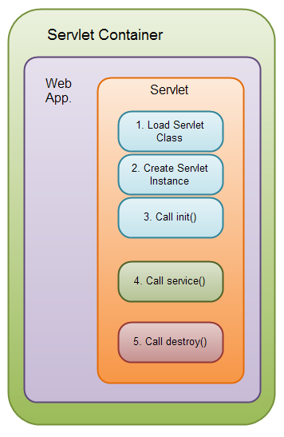

JavaEE Web Geliştirmeye Giriş
Java Servlet
Hazırlayan
Destan Sarpkaya
destan@dorukdestan.com
Bir web sayfası açmak istediğimizde neler olur?
http://wikipedia.org adresini tarayıcımıza yazdık, entera bastık. Ne oldu?
Servlet nedir?
Dinamik içerik üretme sorununa Java'nın getirdiği çözümdür.
Resmi Tanım
- Java Servlet
- A servlet is a Java programming language class used to extend the capabilities of servers that host applications accessed by means of a request-response programming model.
- Java Servlet
- Servlet, request-response programlama modeliyle erişilen uygulamaları barındıran sunucuların yeteneklerini geliştirmek için kullanılan bir Java programlama dili sınıfıdır.
Tamam tamam Türkçesi de var :)
En az 2 kez okumak gerekiyor :/
Sunucular, sunucular...
- Web sunucusu (Web Server)
-
Aslında internet üzerinden istemcilere web içeriği sunan tüm yazılımlar web sunucusudur.
Ancak bazı forumlarda bu kavramın yalnızca durağan içerik sunan sunucular için kullanıldığını görebilirsiniz. - Servlet Container
- Java Servlet Spesifikasyonu'nun herhangi bir sürümünü implement eden web sunucularıdır. Örneğin JSR-315 Java™ Servlet 3.0 bir servlet spesifikasyonudur.
- Uygulama Sunucusu (Application Server)
- Sadece Java Servlet Spesifasyonu'nu değil, CDI, JAX-RS, EJB vs. gibi tüm JavaEE özelliklerini implement eden web sunucularıdır.
İsim vermek gerekirse
- Web server
- Apache, Nginx, lighttpd ...
- Servlet Container
- Apache Tomcat, Jetty ...
- Application Server
- JBoss AS, Glassfish, Apache TomEE, Oracle Web Logic ...
Servletler nasıl çalışır?

Servlet Yaşam Döngüsü

Servletin yaşam döngüsü deploy edildiği (yüklenildiği) servlet container tarafından denetlenir.
Bir istek bir servlete yönlendirildiği zaman, servlet container şu adımları yapar:
Servlet Yaşam Döngüsü
- Bir servlet instanceı yoksa, servlet container:
- Servlet sınıfını yükler
- Servlet sınıfının bir instanceını oluşturur
initializemethodunu çağırarak servlet instansını hazırlar
- Container
servicemethodunu çağırır, request ve response nesnelerini parametre olarak verir. - Container
destroymethodunu çağırır ve ardından servleti sonlandırır (servlet container hafızada yer açmak isteyince veya container kendisi de kapanıyorken)